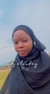

My name is Azeez Nofisat, am from Nigeria, am an introvert. I am bonafide of Altschool, with the ID number ALT/SOE/023/3743.
I was born and raised in Ogun State, Nigeria. i attended Jibdik international islamic Foundation (JIIF) where i obtained my school leaving certificate. I did my secondary school at Owu community Comprehensive High School, Elere Adubi, Ewekoro Local Government, and obtained o'level result in science department (2014/2015) session. All my goals then was to be a medical nurse or be in medical line. But due to financial issue it was very hard to move forward and later go for auxillary nurse. While doing this, i start taking different steps so that i can go back to school, to achieve my goals in nursing but God know the best, i tried all my possible best to gain admissionin one, nothing is working out due to connection and finance. That is when i lose interest in this medical line of a thing. In 2019, i gained admission in Federal College of Education, Abeokuta, Ogun State, where i graduated with NCE Certificate in Integrated science/ Computer Science. From then, i now have interest in computer. Though, we don't really do pratical, so am average in the use computer. I really love working on computer and decided to choose software engineer. And also, my mentor, my super hero, my advicer, my precious uncle,who is always there for me, who is encouraging me more on this journey is also a full stack engineer, may Almighty Allah contiune to bless him and his family, Amen. I graduated with my NCE certificate in 2022 and have been doing teaching job since then so i can have some money to go back to school and did my degree next year inshall Allah. While on this, am also trying to create time for this learning.
I choose and Joined Altschool because i want to start this new career of mine in Tech and see Altschool has a condusive place where i can acquire some knowledge i will be needing to be a succesful developer and also a community where we can interact with each other and learn more from ourself. At the end of this program i should have all knowledge needed to be of best in Feild.